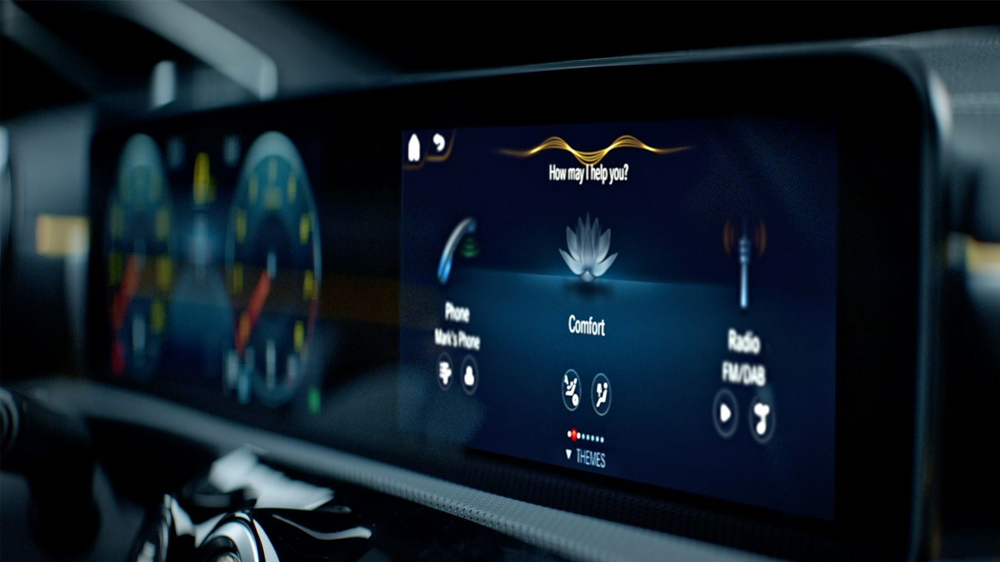
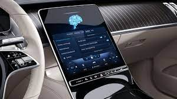
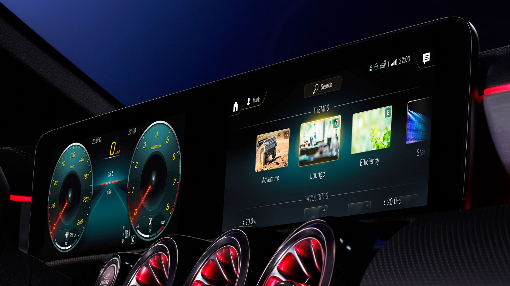
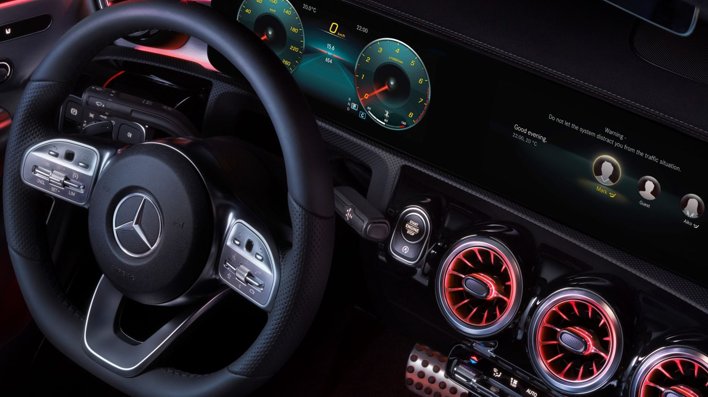
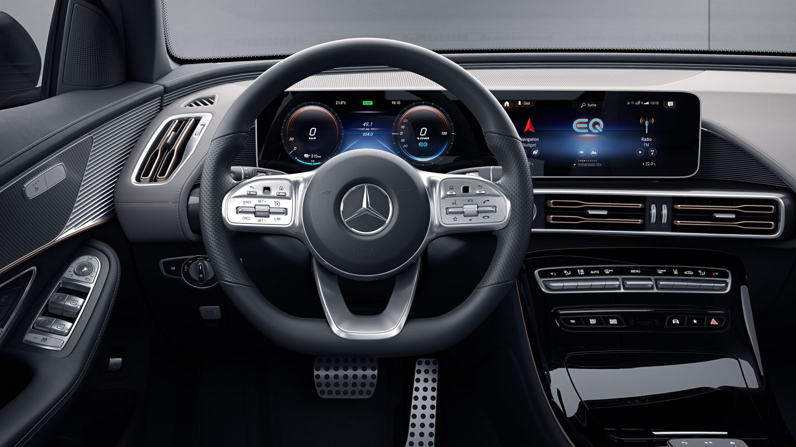
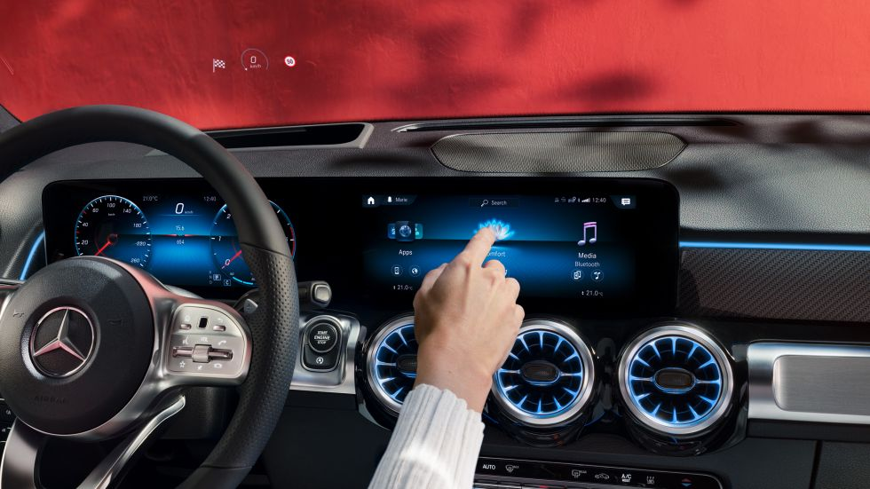
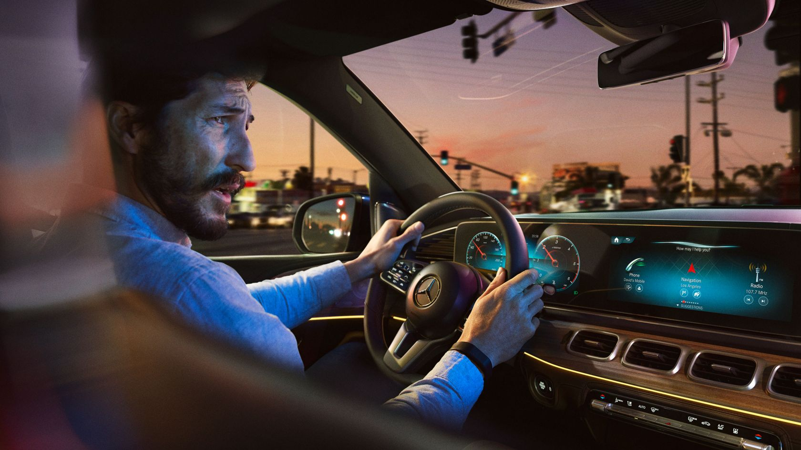

Convierte tu Mercedes en un asistente personal que entiende lo que necesitas
Encuentra los mejores restaurantes, cafés, hoteles y otros puntos de interés mediante el asistente de voz MBUX.
Siempre conectado. Utiliza el sistema multimedia de tu Mercedes para navegar por internet y conecta dispositivos móviles a través del punto de acceso Wi-Fi.
Recibe tus emisoras de radio y podcasts favoritos, allí donde estés.


¡Descubre las funciones de MBUX!
Mercedes Benz User eXperience (MBUX) es el sistema de información y entretenimiento disponible en todos los Mercedes nuevos. Introducido por la Clase A en 2018, este nuevo sistema multimedia prima la experiencia de los usuarios con las mejores soluciones de conectividad del mercado. Ha sido desarrollado pensando en la siguiente etapa de los coches conectados, brindando acceso a los ocupantes a todos esos servicios esenciales a bordo de un Mercedes Benz.
El sistema de información y entretenimiento de Mercedes Benz es accesible a través de una o dos pantallas. La de la izquierda actúa como cuadro de instrumentos digital (información), mientras que la de la derecha es para el apartado multimedia (entretenimiento). En la mayoría de modelos, la pantalla de la derecha es táctil, mientras que en todos los Mercedes Benz el sistema se puede controlar a través del volante multifunción o del touchpad ubicado en la consola central inferior.
Motivo 1
Motivo 2
Motivo 3
Adaptado a tus necesidades
Confia en tu intuicion
Descubre la inteligencia artificial



Manual para el usuario
El sistema MBUX es tan fácil como intuitivo. Está diseñado para funcionar como un teléfono móvil, por lo que los menús se han dispuesto como si fueran las aplicaciones de un smartphone. El sistema de infotainment de Mercedes Benz incluye inteligencia artificial, por lo que el sistema aprende sobre los gustos y preferencias del conductor. Esto permite al MBUX ofrecer sugerencias y anticiparse a las necesidades del usuario.
En la pantalla de la izquierda se visualiza el velocímetro y el cuentarrevoluciones, así como los indicadores de temperatura y nivel de combustible. Pero también es personalizable. Lo puedes configurar en cuatro estilos de visualizado diferentes –Clásico, Deportivo, Avanzado y Discreto– para encontrar el que mejor encaje con tu personalidad y gustos. Además, la esfera del cuentarrevoluciones se puede configurar para visualizar información sobre el estado del vehículo, el navegador o tu música preferida.
A la derecha del volante, la pantalla de entretenimiento. Esta unidad es completamente táctil e integra todas las opciones del sistema, además de las funciones del cuadro de instrumentos digital. En ella puedes configurar desde el navegador a la agenda telefónica. Los ajustes, el sonido, la radio o información relevante sobre el estado de tu Mercedes Benz. También permite acceder a aplicaciones que puedes descargar y las preferencias del climatizador.

Comandos clave
MBUX es un sistema de infotainment tan avanzado que te permite controlarlo con tu voz. Basta con pronunciar dos palabras para activarlo: «Hey Mercedes». Y tu coche es todo oídos. El sistema inteligente comprende sin necesidad de que aprendas previamente determinados comandos de voz, y puede hablar contigo. Esta tecnología puede leer tus mensajes en voz alta, o tomarlos al dictado y enviarlos.
Pero eso no es todo. Si quieres subir la temperatura del climatizador, basta con decir: «Hey Mercedes, tengo frío», y el asistente de voz aumentará los grados automáticamente. Cambiar la emisora de radio, subir o bajar el volumen, o buscar un restaurante es tan fácil como decir: «Hey Mercedes, tengo hambre». Todo está al alcance de tu voz. Todo sin soltar las manos del volante ni apartar la mirada de la carretera.
Además, reconoce e interpreta sin contacto directo los movimientos de tus manos y tus brazos. Con su ayuda, puedes activar determinadas funciones mediante un sencillo gesto de tu mano. El sistema incluye puede diferenciar entre el conductor y el acompañante, tanto los gestos como los comandos de voz.

Modelos con tecnolodia MBUX
Toda la gama de modelos Mercedes Benz nuevos incluyen alguna de las versiones del sistema de infotainment MBUX. Las configuraciones son diversas, desde una única pantalla horizontal en la consola central, hasta dos unidades en paralelo.